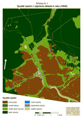
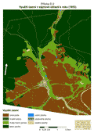
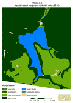

Vektorizované polygony byly rozděleny do kategorií využití půdy podobných těm, které byly použity v projektu LUCC Czechia. Stejné kategorie byly použity také pro vektorová data ZABAGED®. Vectorized polygons have been divided into land use categories (attribute groups) similar to the LUCC Czechia project. The same categories were used for the vector data of ZABAGED®.
| název kategorie land use category | obsahuje contains |
|---|---|
| orná půda arable land | orná půda arable land |
| trvalé plochy permanent cultures | sady, zahrady, parky orchards, gardens, parks |
| trvalý travní porost permanent grassland | louky, pastviny, mokré louky, obecní pastviny meadows, pastures, wet pastures, municipal patures |
| lesní plochy forested areas | jehličnaté lesy, smíšené lesy, listnaté lesy, kosodřeviny coniferous forests, mixed forests, deciduous forests, scrub pine |
| vodní plochy water areas | řeky, potoky, říčky, náhony, rybníky, jezera, nádrže, sádky rivers, streams, brooks, mill-races, ponds, lakes, reservoirs, fish, hatcheries |
| zastavěné plochy built-up areas | nespalné budovy, spalné budovy, technická zařízení combustible and non-combustible buildings, technical objects |
| ostatní plochy other areas | komunikace, mosty, nádvoří, ulice, hřbitovy, hráze, kamenolomy, rašeliniště, neplodná půda read and railway network, bridges, courtyards, streets, cemeteries, dams, quarries, moorlands, infertile land |
Celková vektorizovaná plocha činila 2 873,6 ha. Při vektorizaci císařských otisků bylo vytvořeno 5 789 polygonů, u SMO-5 6 323 polygonů. Data ze ZABAGED® byla sloučena do 213 polygonů. Srovnání využití ploch (v ha) v zájmovém území je pro tři časové horizonty - pro roky 1842, 1953 a 2012 - zobrazeno v následující tabulce. Total vectorized area was 2 873.6 ha, there were 5 789 polygons vectorized on imperial imprints, 6 323 polygons on SMO-5 and the ZABAGED® data was merged into 213 polygons. A comparison of the use of land (in ha) in the area of interest for three time horizons - for the years 1842, 1953 and 2012 - is shown in the table below.
| kategorie [ha] category [ha] | rok 1842 year 1842 | rok 1953 year 1953 | rok 2012 year 2012 |
|---|---|---|---|
| orná půda arable land | 874,5 | 920,1 | 0,7 |
| trvalé plochy permanent cultures | 1,7 | 0,7 | 7,5 |
| trvalý travní porost permanent grassland | 474,2 | 375,3 | 789,6 |
| lesní plochy forested areas | 1413,8 | 1446,8 | 1733,7 |
| vodní plochy water areas | 10,2 | 11,6 | 322,7 |
| zastavěné plochy built-up areas | 10,7 | 14,5 | 1,3 |
| ostatní plochy other areas | 88,5 | 10,4 | 18,1 |
| rok year | 1847 | 1869 | 1880 | 1890 | 1900 | 1910 | 1921 | 1930 | 1950 | 1961 | 1970 |
|---|---|---|---|---|---|---|---|---|---|---|---|
| lidé people | 3137 | 2988 | 3387 | 3433 | 4080 | 3668 | 2632 | 2606 | 731 | 717 | 395 |
| domy houses | 415 | 425 | 439 | 448 | 451 | 432 | 430 | 435 | 489 | ? | 107 |
Nejvýraznější změna využití nastává mezi roky 1953 a 2012. Důvodem této změny je stavba vodní nádrže v 70. letech 20. století. V těchto letech byla zcela zničena zástavba ve dvou vesnicích (Přísečnice a Dolina) a v jedné (Rusová) musela zástavba ustoupit I. ochrannému pásmu. Jelikož se jedná o nádrž na pitnou vodu, byl a je zakázán přístup na území I. pásma. To způsobilo přeměnu orné půdy na lesy a trvalý travní porost. Napuštěním vodní nádrže se celková hodnota výměry vodní plochy zvýšila téměř 28násobně. The most significant change of land use occurs between 1953 and 2012 due to the construction of a water reservoir in the seventies. In these years, two settlements were completely destroyed (Přísečnice and Dolina) and one village (Rusová) had to give ground to the 1st protective zone of drinking water reservoir. Thus, a conversion of arable land to forests and permanent grassland can be identified. After filling the water reservoir, the total value of the water area in this region increased almost 28 times.
Při porovnání tabulek vývoj využití území a vývoj populace a domů lze říci, že nárůst počtu obyvatel v roce 1900 souhlasí s nárůstem orné půdy a zastavěné plochy. Na druhé straně, rozsah ostatních ploch se výrazně snížil, což může být způsobeno ukončením těžby kamene a rašeliny. Trvalé travní plochy byly zřejmě nahrazeny ornou půdou. I přes některé úbytky a nárůstky ploch se krajina i využití ploch mezi lety 1842 a 1953 téměř nezměnily. Největší změnou byla výstavba vodní nádrže, která postihla obyvatele i krajinu oblasti. When comparing Table of Land use areas at Pressnitz and Table of the development of population and houses, it can be said that the increase in population in 1900 agrees with the increase in arable land and built-up areas. In contrast, the extent of other areas significantly decreased, which may be due to the termination of mining stone and peat. Permanent grassland was apparently replaced by arable land. Despite some increases and decreases in categories, it can be said that the landscape and its use remained almost unchanged from 1842 to 1953. The biggest change was the construction of a water dam which affected the population and landscape of the region.
Na následujících obrázcích si lze prohlédnout využití ploch pro jednotlivé roky. The Land use for particular years is depicted in the pictures below.
|  |  |  |